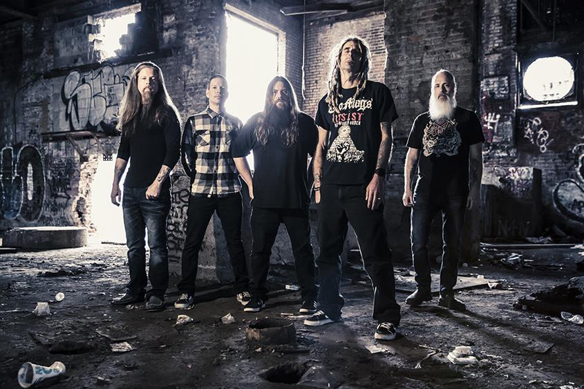

New Wave of American Heavy Metal
Background
Due to the advent of Grunge Music and the public's attention being lost on Heavy Metal, Glam Metal and Thrash bands who soared in popularity in the 1980s, while still being alive and well in the Underground, Metal had dissappeared from the mainstream for the most part in the earlier half of the 1990s. After the death of Kurt Cobain (and Nirvana with him) in 1994 and the breakup of Grunge giant Soundgarden, the average heavy music consumer was looking for something to fill the void.
History
The New Wave of American Heavy Metal's rise can be contributed to multiple bands in multiple subgenres seeking to fill the void at the same time. Korn began to pioneer the hip hop infused style of "Nu Metal", while bands such as Pantera and Exhorder pioneered Groove Metal, Their were several bands such as System Of A Down, Primus and many, many others who were experimenting and throwing anything and everything at the wall until something stuck, leading to the creation of Alternative Metal.

Bands in the New Wave of American Heavy Metal seeked to bring metal back to it's core brutality, drawing from thrash metal and punk as opposed to the blues. While the use of the term has died down, many newer, mainstream metal bands could be accurately labeled as being apart of the New Wave of American Heavy Metal.
Included Genres
- Alternative Metal
- Groove Metal
- Metalcore
- Industrial Metal
- Nu Metal